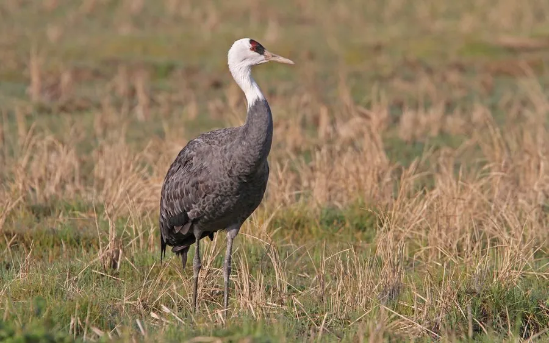

鸟类 · 动物界
白头鹤 Grus monacha

头顶白色、体羽灰黑的小型鹤类，繁殖于西伯利亚和黑龙江流域，在长江流域与日本越冬，全球仅一万余只。
- 分类
- 门脊索动物门纲鸟纲目鹤形目科鹤科属鹤属
- 栖息环境
- 繁殖于北方针叶林沼泽，越冬于浅水湖泊、河滩和农田
- 地理分布
- 繁殖于俄罗斯西伯利亚东部和中国黑龙江流域，越冬于长江中下游与日本
- 保护级别
- IUCN 易危（VU）；中国国家一级保护动物
物种志
白头鹤体长 91–100 cm，体重 3.3–4.7 kg。它的体羽以灰黑色为主，头部和颈部白色，头顶前部有红色裸皮，喙黄绿色，腿黑色。它的体形在鹤类中偏小，颈部修长，站立时姿态优雅，飞行时可见黑白相间的翼部。
白头鹤繁殖于俄罗斯西伯利亚东部和中国黑龙江流域的湿地，冬季南迁到中国长江中下游、朝鲜半岛和日本九州越冬。它们以植物根茎、谷物、昆虫和小型水生动物为食，常在浅水沼泽和农田中觅食。繁殖期每窝产卵 2 枚，孵化 27–30 天。由于湿地减少和人为干扰，全球种群仅约 1 万余只，被列为易危物种，中国将其列为国家一级保护动物。
形态与习性
- 食性植物根茎、谷物、昆虫和小型水生动物
- 体长91–100 cm
- 体重3.3–4.7 kg
- 繁殖每窝 2 枚卵，孵化 27–30 天
- 种群全球约 1 万余只
- 寿命野外约 20 年
趣味知识
- 白头鹤头顶白色，是鹤类中体形较小的一种，因此又被称为“玄鹤”。
- 它们繁殖于西伯利亚和黑龙江流域，冬季到长江流域和日本越冬。
- 白头鹤全球仅约 1 万余只，被列为易危物种和国家一级保护动物。